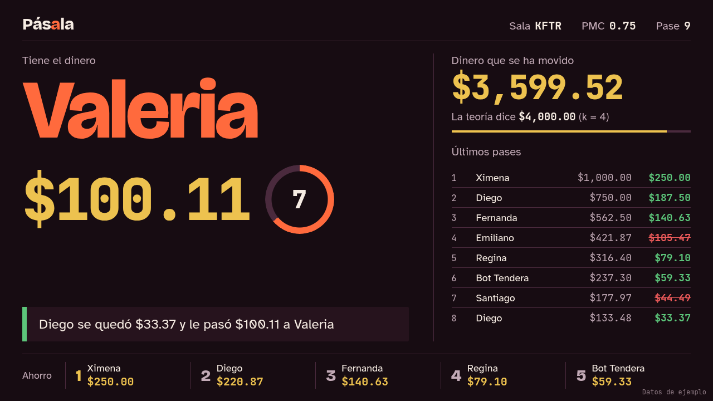
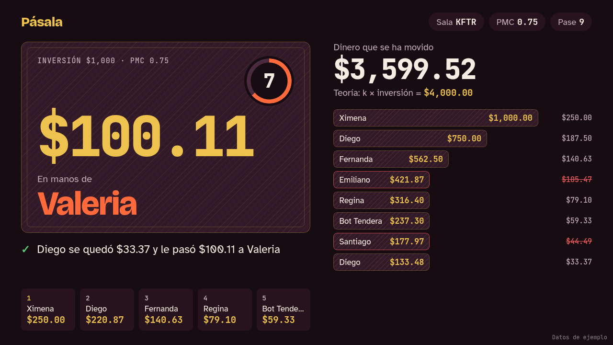
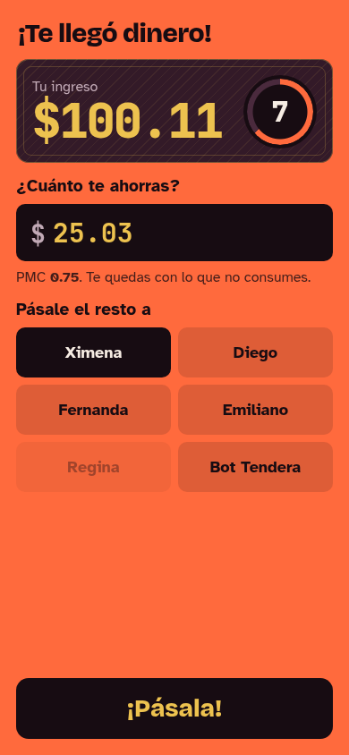
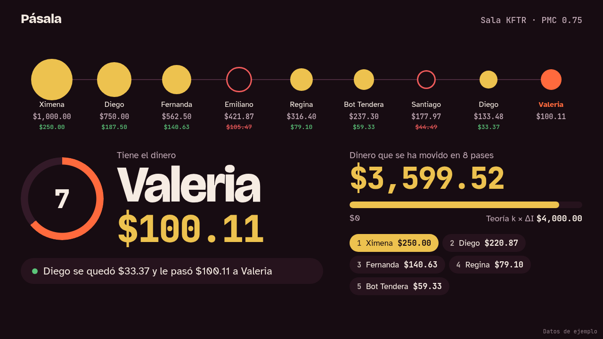
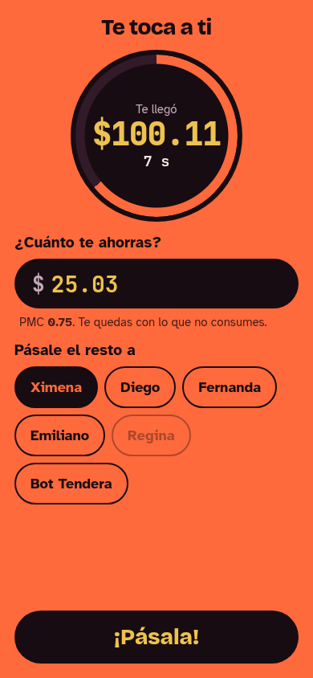

1Marcador
Marcador de transmisión deportiva. Esquinas rectas, líneas finas, una barra inferior con el último evento. El nombre de quien tiene el dinero domina la pantalla.


Las tres usan tu paleta y tus fuentes de IDEA §3.3 con los mismos datos de ejemplo (PMC 0.75, $1,000, pase 9). Cambian la composición, la forma y el movimiento. Proyector a 1280×720, celular a 390×844.
Marcador de transmisión deportiva. Esquinas rectas, líneas finas, una barra inferior con el último evento. El nombre de quien tiene el dinero domina la pantalla.

El dinero es un billete grabado. La cadena es una pila de billetes que se encogen pase a pase. Esquinas suaves de 14 px.


La cadena es la protagonista: cada pase es un círculo del tamaño de su ingreso, así se ve cómo se apaga la serie. Quien tiene el dinero es el último nodo y late. Formas de píldora.

